Abstract
The package graphicsutils is a set of miscellaneous functions to be used with the graphics library.The “graphicsutils” package includes a set of functions built on the top of the graphics package. This vignette is basically a guided tour of the package, a cook book that exemplifies the functions implemented.
An important aspect of graphicsutils is that functions have been written in a layer-oriented perspective meaning that the default behavior of the functions provides functions that are rather minimalist and the user should call other functions (such as axis, box2, etc.) or change the default parameters values in order to customize his plot. Even though that this takes more command lines, we think that this approach makes it easier to get very personalized figures and we hope the functions we provide will help users making beautiful figures.
Empty your plot with plot0()
In the layer-oriented approach we are using, it is very convenient to start with an empty plot of a given dimension, just like a canevas. To help creating such canevas, we wrote plot0(). Note that by default x and y ranges are c(-1, 1). Moreover the argument fill color the plot region (it is equivalent to calling the plotAreaColor()).
par(mar=c(1,1,1,1), mfrow=c(2,2)) # plot0() text(0, 0, "plot0") # plot0(fill="#8eb5e3") # plot0() plotAreaColor(col="#8eb5e3") # plot0() plotAreaColor(col="#8eb5e3", border="grey20", lty=2, lwd=4)
plot0() and plotAreaColor()
The fill and grid.col make the customization of the background fairly easy:
plot0(c(-10,10), fill="grey90", grid.col = 'white')
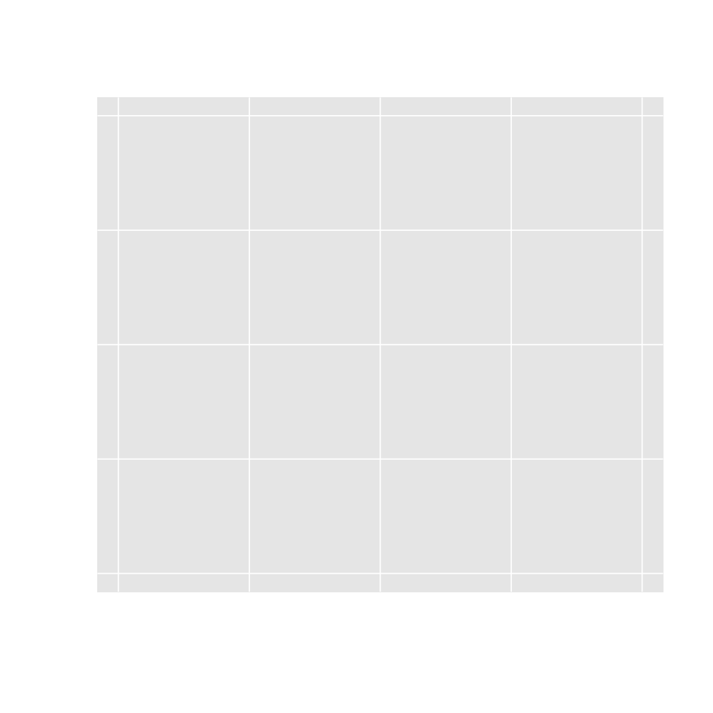
Another parameter text that adds a text in the middle of the plot area which makes plot0() a helpful function to add piece of legend :
plot0(c(-10,10), asp=1, fill=8, text='cool', srt=45, cex=4, col=2)

Add plot components
box2()
The box2() function allows the user to add any axes around the plot. A limitation of the box() function is does not allowed all the combination of axes. box2() proposes a simple way to select the sides to be added on the plot: 1 = bottom; 2 = left; 3 = top; 4 = right.
par(mar=rep(2,4)) plot0() box2(which="figure", lwd=2, fill="grey30") box2(side=12, lwd=2, fill="grey80") axis(1) axis(2)

Add circles
A function that creates circles.
par(mar=c(1,1,1,1), mfrow=c(2,2)) plot0() circles(0, 0, 1) plot0() circles(0, 0, seq(0,1,0.2)) plot0() circles(0, 0, seq(0,1,0.2), lty=2, lwd=1.4) plot0() circles(0, 0 ,seq(0,1,0.2), from=pi, col="#BBBBFF88", lty=2, lwd=1.4)
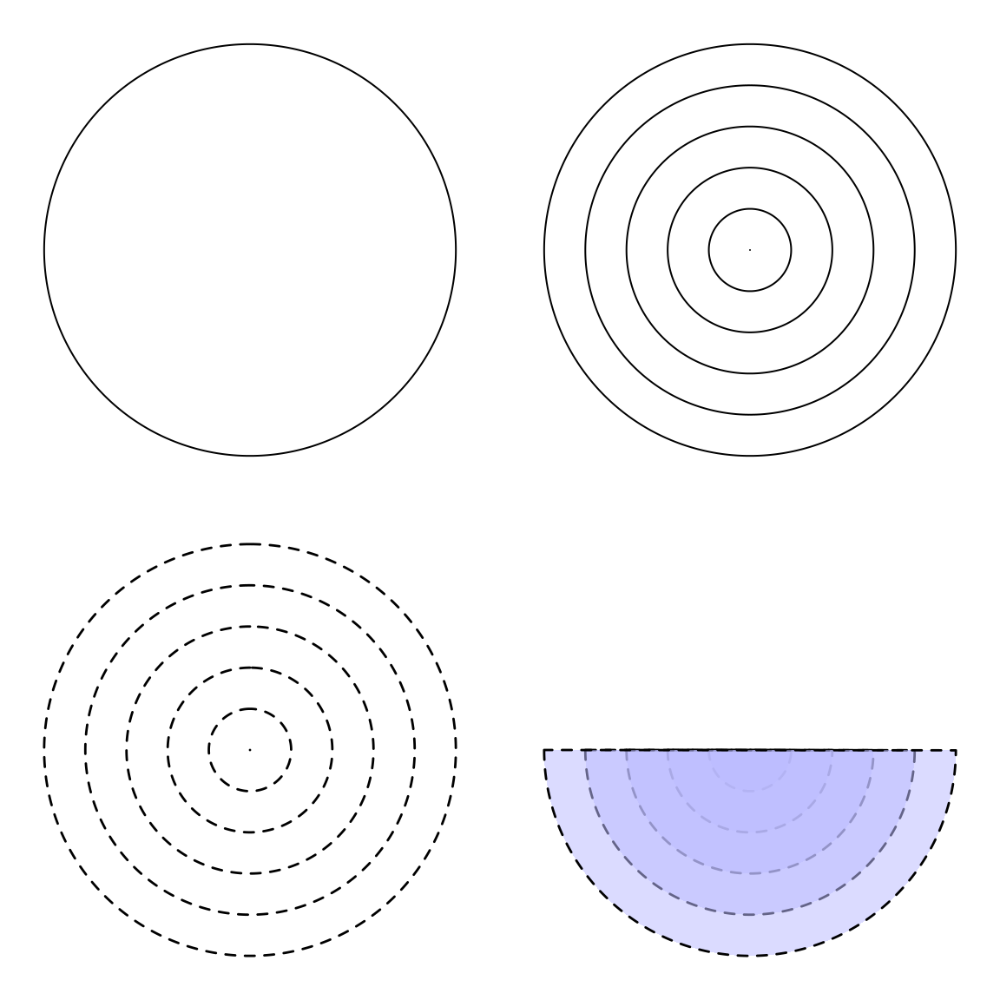
Add ellipses
plot0(c(-2,2), c(-2,2), asp = 1) ellipse(c(-1,1), c(1,1,-1,-1), from = pi*seq(0.25, 1, by = 0.25), to = 1.25*pi, col = 2, border = 4, lwd = 3)
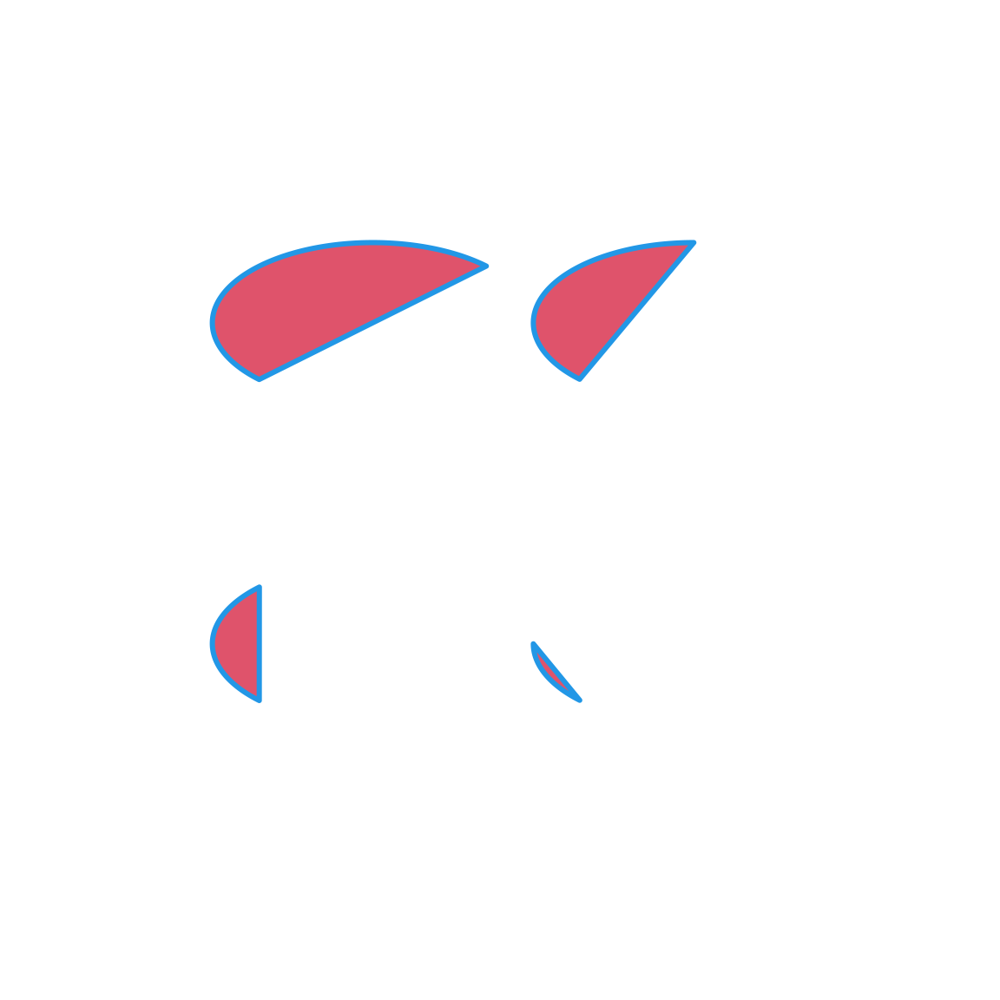
Add images on plot
The pchImage() function eases the uses of rasterImage() to add images (including .png and .jpeg files) on a graphic. It allows to change the color of the whole image.
pathLogo <- system.file("img", "Rlogo.png", package="png") par(mar=c(4,1,4,1), mfrow=c(1,2)) plot0() pchImage(0, 0, file=pathLogo, cex.x =4.5, cex.y=4) plot0() pchImage(0, 0, file=pathLogo, cex.x =4.5, cex.y=4, col="grey25", angle=25)

Add a frame to your plot
Default frame.
plot0() frameIt()
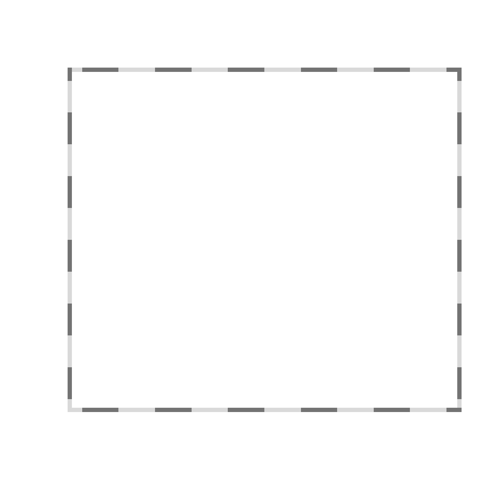
A custom one.
plot0() frameIt(cex.x=1.5, col=c(2,3), border=1)
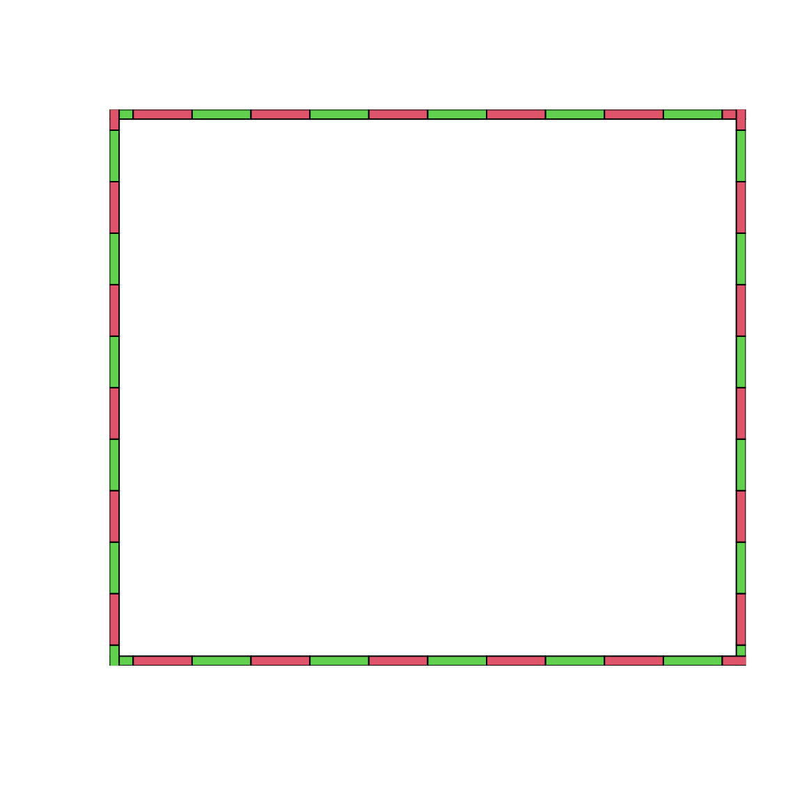
Add an envelop
plot0(c(0,10),c(0,10)) sz <- 100 seqx <- seq(0, 10, length.out = sz) seqy1 <- 0.2*seqx*runif(sz, 0, 1) seqy2 <- 4+0.25*seqx*runif(sz, 0, 1) seqy3 <- 8+0.25*seqx*runif(sz, 0, 1) envelop(seqx, seqy1, seqy2, col = 'grey85', border = NA) envelop(seqx, seqy2, seqy3, col = 'grey25', border = NA)
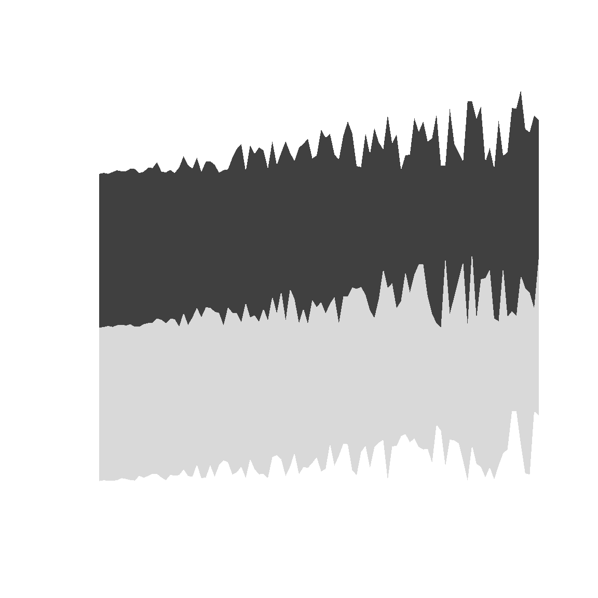
Charts
boxplot2
par(mar=rep(2,4)) dfa <- data.frame(name = rep(LETTERS[1:4], 25), val = runif(100)) plot0(c(0,5), c(0,1)) boxplot2(val ~ name, data = dfa, add = TRUE, vc_cex = c(4, 40, 2))
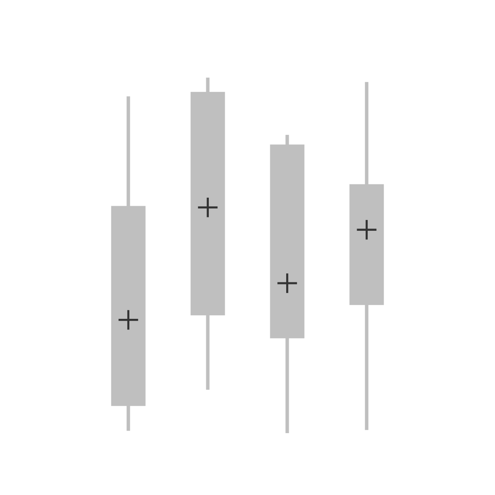
plotMeans()
dataset <- data.frame(dat=c(rnorm(50, 10, 2), rnorm(50, 20, 2)) , grp=rep(c('A','D'), each=50)) graphics::par(mfrow=c(1,3)) plotMeans(dat~grp, data=dataset, pch=19) ## plotMeans(dat~grp, data=dataset, FUN_err= function(x) sd(x)*2, pch=15, ylim=c(-5,30), yaxs='i', connect=TRUE, args_con=list(lwd=2, lty=2, col='grey35')) ## ser <- function(x) sd(x)/sqrt(length(x)) plot0(c(0,4), c(0,30)) plotMeans(dat~grp, data=dataset, FUN_err=ser, pch=15, draw_axis=FALSE, add=TRUE, seqx=c(.5,3.5), mar=c(6,6,1,1), cex=1.4) graphics::axis(2)
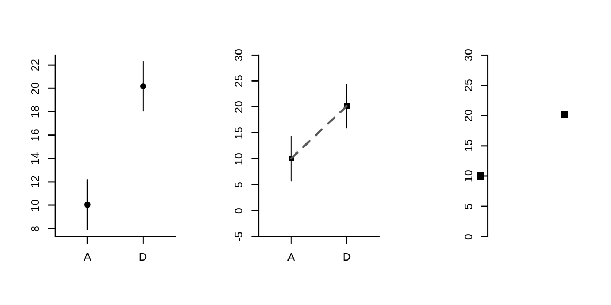
plotImage
img <- png::readPNG(system.file('img', 'Rlogo.png', package='png'), native=TRUE) op <- graphics::par(no.readonly = TRUE) graphics::par(mfrow=c(2,2), mar=rep(1,4)) for (i in 1:4) plotImage(img)

graphics::par(op)
Another example:
img<-png::readPNG(system.file('img', 'Rlogo.png', package='png'), native=TRUE) n<-15 plot0(c(0,1),c(0,1)) pchImage(0.1+0.8*stats::runif(n), 0.1+0.8*stats::runif(n), cex.x=0.2+1.6*stats::runif(n), obj=img, angle=360*runif(n), col=2)
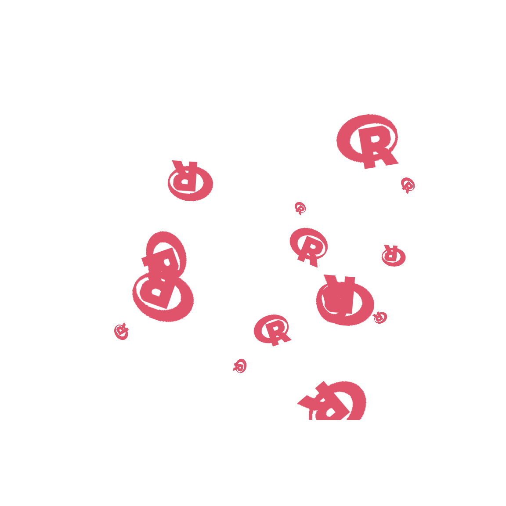

Colors manipulations
Creating shades of colors
The darken() and lighten() functions ease the creation of shades of a given color. For any color palette, use the showPalette() to display them!
someblue <- darken("blue", 10*1:9) showPalette(someblue)
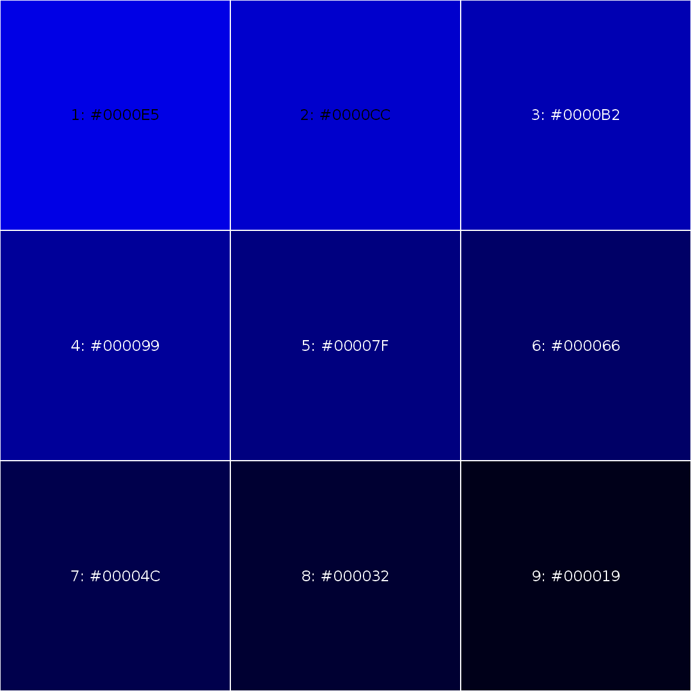
somered <- lighten("red", 10*1:9) showPalette(somered)
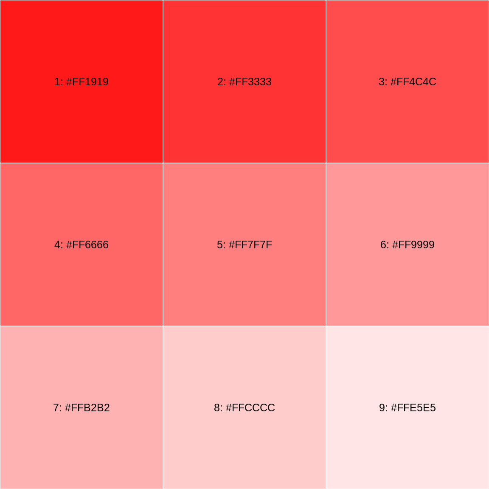
showPalette(ramp("blue", "red", 10*3:7)) showPalette(blendColors(c("blue", "purple")))
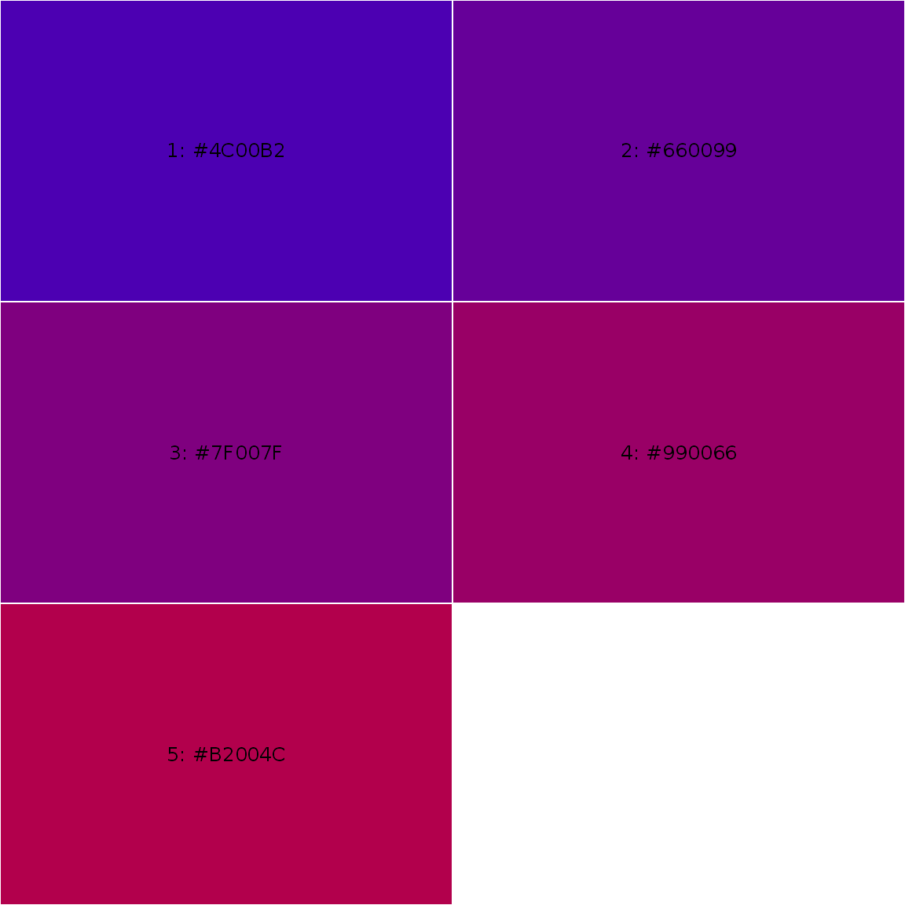
showPalette(rainbow(81))

darken() and lighten() functions are convenient way to produce consistent set of shaded colors with minimal effort; also use showPalette() to display your palette.
someblue <- darken("blue", 10*1:9) showPalette(someblue)

somered <- lighten("red", 10*1:9) showPalette(somered, add_codecolor = TRUE)

Since version 1.1-2 a set of color palettes has been added, see gpuPalette(). By default, gpuPalette() displays the color palettes available:
gpuPalette()#> Color palettes currently available are:
#> atom, cisl, github, google, google2, insileco, slackIn order to use one of the palette, use its names:
showPalette(gpuPalette("insileco"), add_codecolor = TRUE) showPalette(gpuPalette("insileco", 25), add_codecolor = TRUE)
 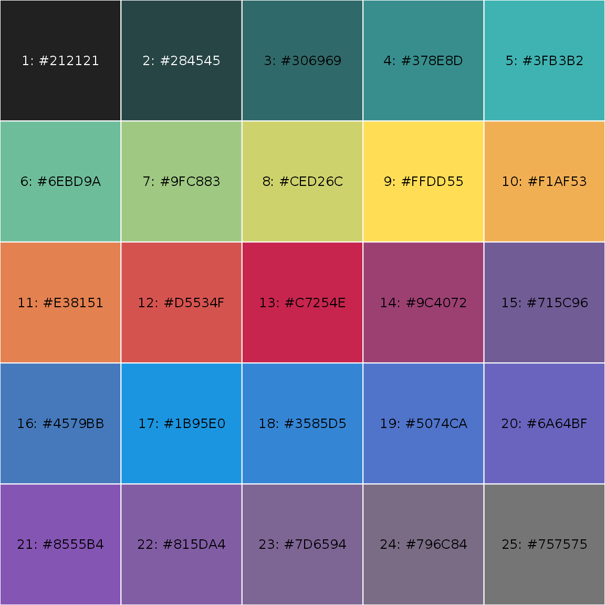
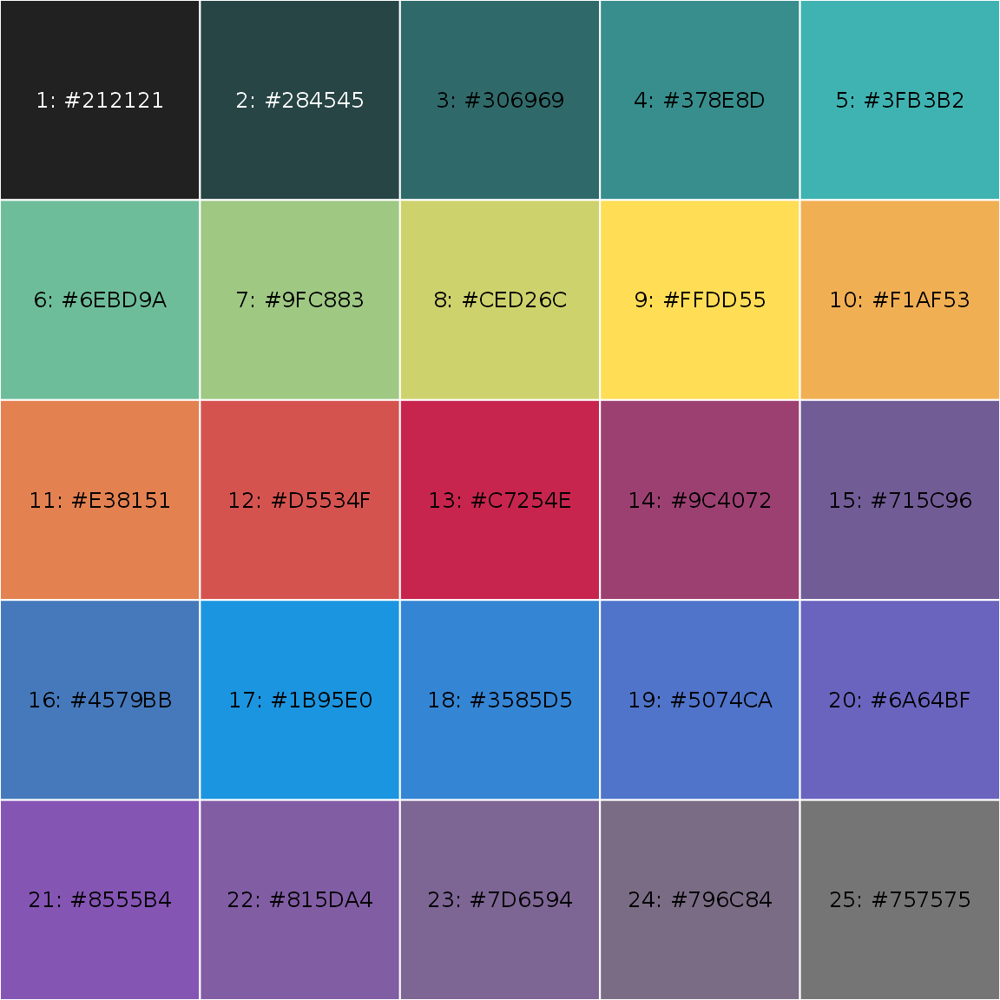
Color scale
par(mar = c(0,0,0,0)) plot0(c(0,10), c(0,10)) colorScale(1, 8, gpuPalette("cisl", 10)) colorScale(1, 1, gpuPalette("cisl", 10), horiz = FALSE, labels.cex = .7) colorScale(7, 8, gpuPalette("cisl", 10), at = 1:5*2, labels = LETTERS[1:5]) lab <- LETTERS[1:10] lab[c(1,3,5,7,9)] <- "" colorScale(7, 1, gpuPalette("cisl", 10), horiz = FALSE, labels = lab, title = "color scale", labels.cex = 1.1, title.cex = 1.6)
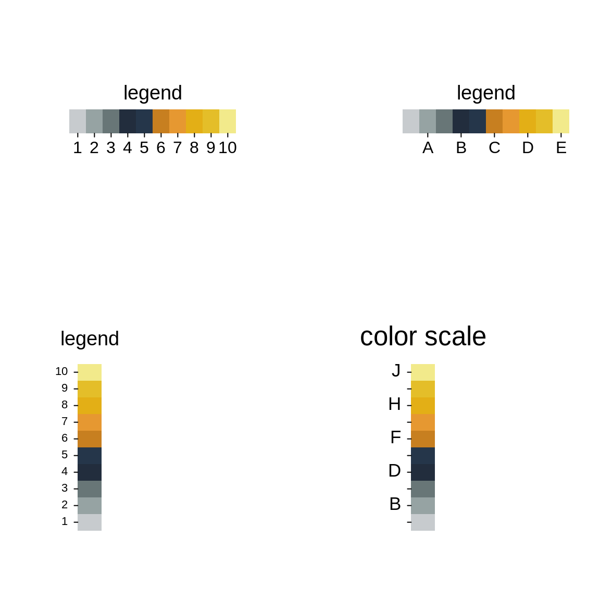
par(mar = c(0,0,0,0)) plot0(c(0,10), c(0,10)) colorScale(2, 7, gpuPalette("cisl", 100), percx = 0.6, at = c(5, 25, 50, 75, 95), title = "adj = 0") colorScale(2, 3, gpuPalette("cisl", 100), percx = 0.6, at = c(5, 25, 50, 75, 95), adj = 1, title = "adj = 1")
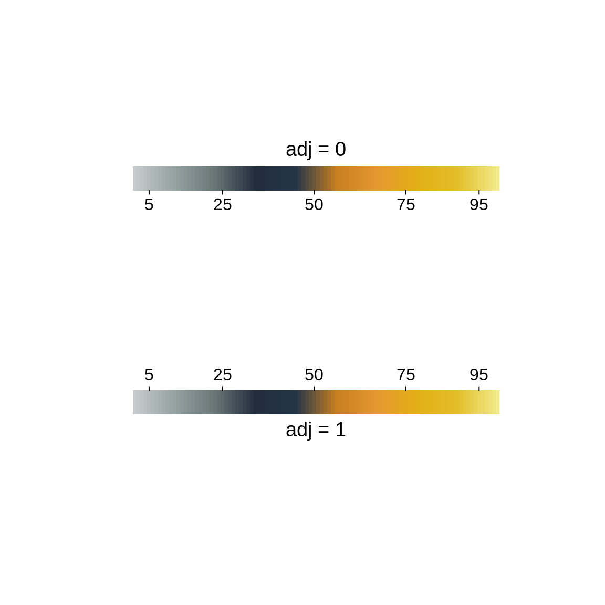
Miscellaneous
Gantt chart
dfGantt#> milestone task start due done
#> 1 Manuscript Research & readings 2017-09-01 2017-11-28 FALSE
#> 2 Manuscript Data preparation 2017-09-14 2017-09-28 TRUE
#> 3 Manuscript Analyses 2017-09-28 2017-10-28 FALSE
#> 4 Manuscript Plan 2017-09-21 2017-09-28 TRUE
#> 5 Manuscript Introduction 2017-09-28 2017-10-28 FALSE
#> 6 Manuscript Methods 2017-09-14 2017-10-28 FALSE
#> 7 Manuscript Results 2017-10-28 2017-11-14 FALSE
#> 8 Manuscript Discussion 2017-11-14 2017-11-28 FALSE
#> 9 Manuscript Conclusion 2017-11-28 2017-12-04 FALSE
#> 11 Manuscript2 Research & readings 2017-09-04 2017-11-28 FALSE
#> 51 Manuscript2 Introduction 2017-09-28 2017-10-28 FALSE
#> 61 Manuscript2 Methods 2017-09-14 2017-10-28 FALSE
#> 71 Manuscript2 Results 2017-10-28 2017-11-14 FALSE
#> 81 Manuscript2 Discussion 2017-11-14 2017-11-28 FALSE
#> 91 Manuscript2 Conclusion 2017-11-28 2017-12-04 FALSEpar(lwd = 2) palette(gpuPalette(6)[c(2,4)]) ganttChart(dfGantt, mstone_lwd = 4, mstone_spacing = 0.6, lighten_done = 80)
#> milestone task start due done start_tmp
#> 1 Manuscript Research & readings 2017-09-01 2017-11-28 I 2017-09-01
#> 2 Manuscript Data preparation 2017-09-14 2017-09-28 C 2017-09-01
#> 3 Manuscript Analyses 2017-09-28 2017-10-28 I 2017-09-01
#> 4 Manuscript Plan 2017-09-21 2017-09-28 C 2017-09-01
#> 5 Manuscript Introduction 2017-09-28 2017-10-28 I 2017-09-01
#> 6 Manuscript Methods 2017-09-14 2017-10-28 I 2017-09-01
#> 7 Manuscript Results 2017-10-28 2017-11-14 I 2017-09-01
#> 8 Manuscript Discussion 2017-11-14 2017-11-28 I 2017-09-01
#> 9 Manuscript Conclusion 2017-11-28 2017-12-04 I 2017-09-01
#> 10 Manuscript Manuscript 2017-09-01 2017-12-04 M 2017-09-01
#> 11 Manuscript2 Research & readings 2017-09-04 2017-11-28 I 2017-09-04
#> 12 Manuscript2 Introduction 2017-09-28 2017-10-28 I 2017-09-04
#> 13 Manuscript2 Results 2017-10-28 2017-11-14 I 2017-09-04
#> 14 Manuscript2 Discussion 2017-11-14 2017-11-28 I 2017-09-04
#> 15 Manuscript2 Conclusion 2017-11-28 2017-12-04 I 2017-09-04
#> 16 Manuscript2 Methods 2017-09-14 2017-10-28 I 2017-09-04
#> 17 Manuscript2 Manuscript2 2017-09-04 2017-12-04 M 2017-09-04
palette(gpuPalette(6)[c(3,6)]) ganttChart(dfGantt, task_order = FALSE, mstone_add = TRUE, lighten_done = -40)
#> Warning in ganttChart(dfGantt, task_order = FALSE, mstone_add = TRUE,
#> lighten_done = -40): spacing set to 0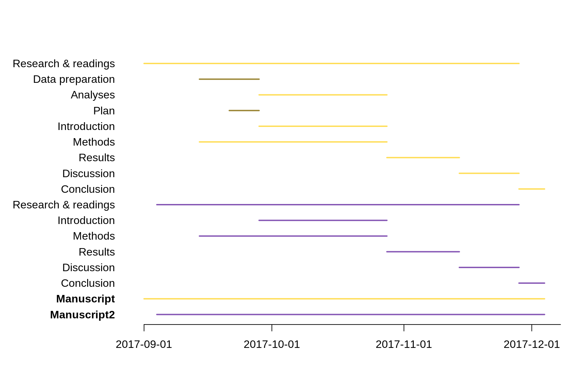
# restore default palette palette("default")
Are these points within this polygon?
mat <- matrix(10*runif(100), 50) res <- pointsInPolygon(mat, cbind(c(4,8,8,4), c(4,4,8,8))) # Visual assessment plot0(c(0,10), c(0,10)) graphics::polygon(c(4,8,8,4),c(4,4,8,8)) graphics::points(mat[,1], mat[,2], col = res+1)
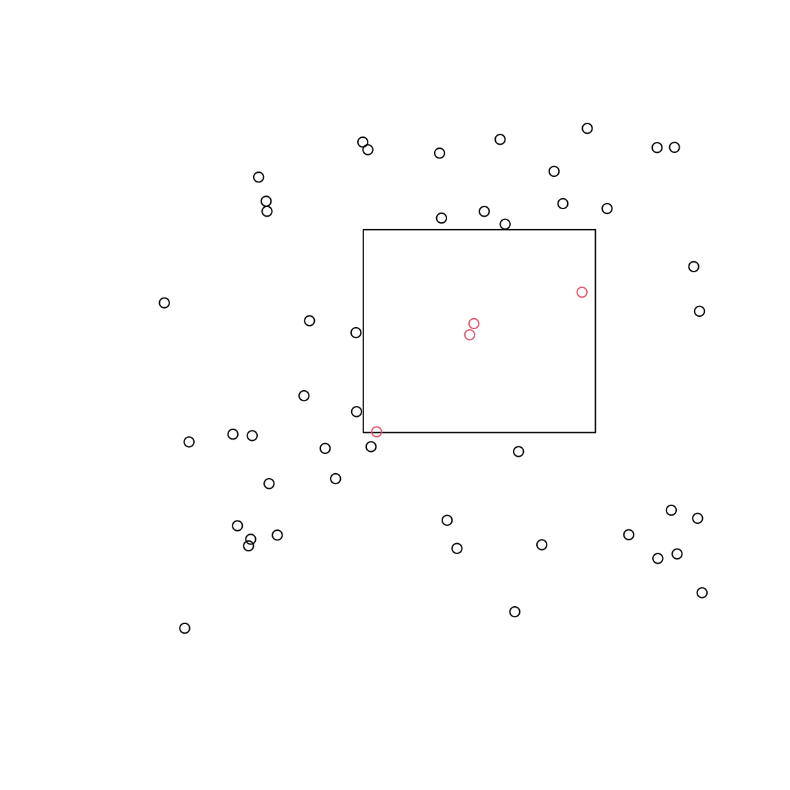
compassRose
par(mfrow=c(2,2), mar=rep(1,4)) ## plot0(c(-1,1), asp=1) compassRose(0, 0) ## plot0(c(-1,1), asp=1) compassRose(0.5, 0.5) ## plot0(c(-1,1), asp=1) compassRose(0, 0, cex.cr=2) ## plot0(c(-1,1), asp=1) compassRose(0, 0, rot=.75*pi, cex.cr=2, cex.let=1.5, offset=-1.25)
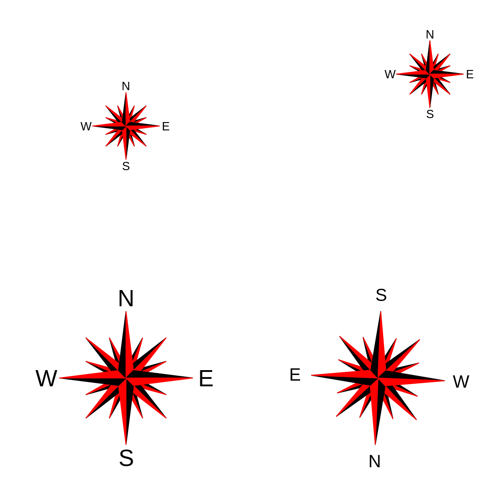
also,
compassRose(0, rot=25, cex.cr = 2, col.let =2, add = FALSE)
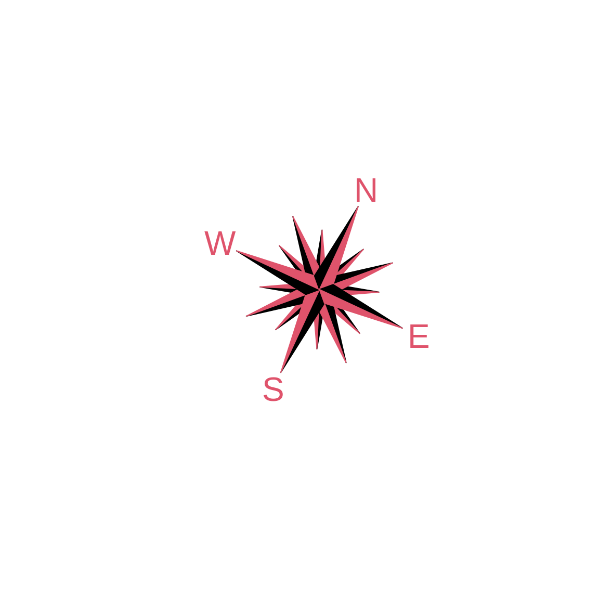
Vector fields
systLin <- function(X, beta){ Y <- matrix(0,ncol=2) Y[1L] <- beta[1,1]*X[1L]+beta[1,2]*X[2L] Y[2L] <- beta[2,1]*X[1L]+beta[2,2]*X[2L] return(Y) } seqx <- seq(-2,2,0.31) seqy <- seq(-2,2,0.31) beta1 <- matrix(c(0,-1,1,0),2) # Plot 1: vecfield2d(coords=expand.grid(seqx, seqy), FUN=systLin, args=list(beta=beta1))

# # Plot 2: graphics::par(mar=c(2,2,2,2)) vecfield2d(coords=expand.grid(seqx, seqy), FUN=systLin, args=list(beta=beta1), cex.x=0.35, cex.arr=0.25, border=NA,cex.hh=1, cex.shr=0.6, col=8) graphics::abline(v=0, h=0)
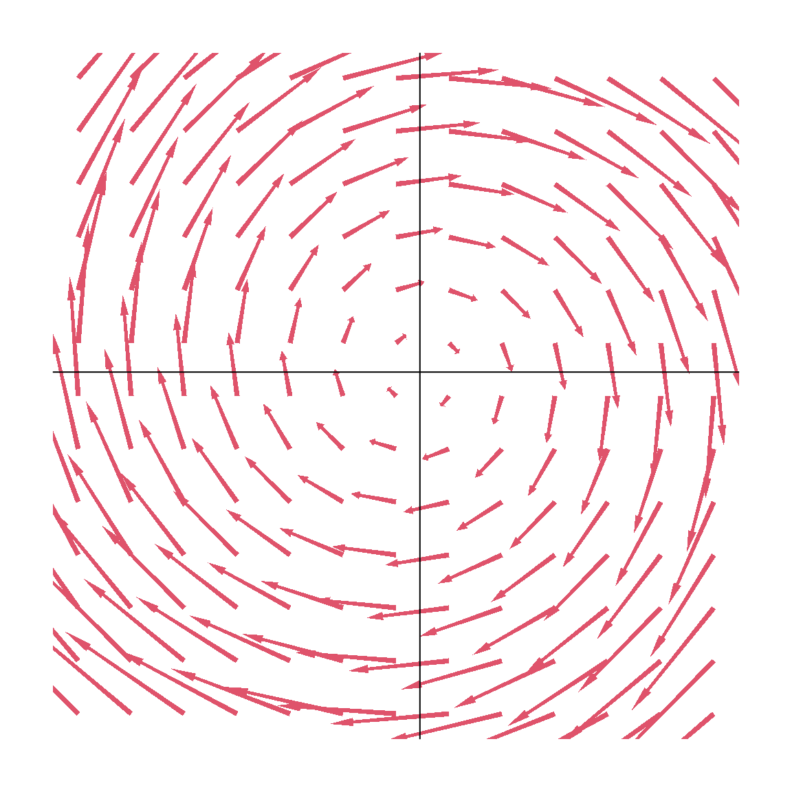
Manipulation of figure dimensions
Get pretty ranges
#> [1] 0.1476220 0.9281011prettyRange(vec)
#> [1] 0.10 0.95prettyRange(c(3.849,3.88245))
#> [1] 3.845 3.885